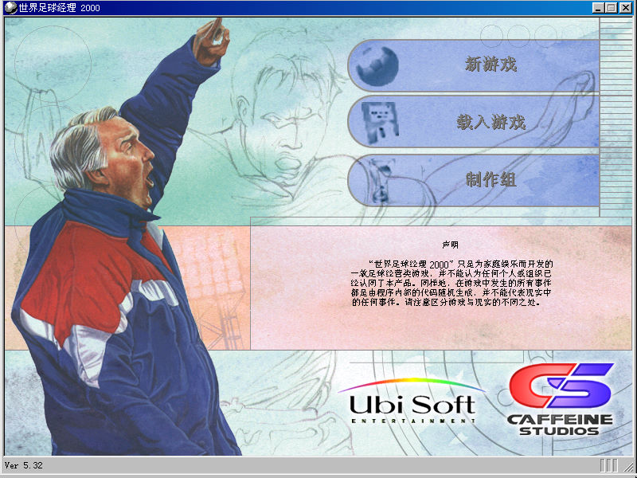
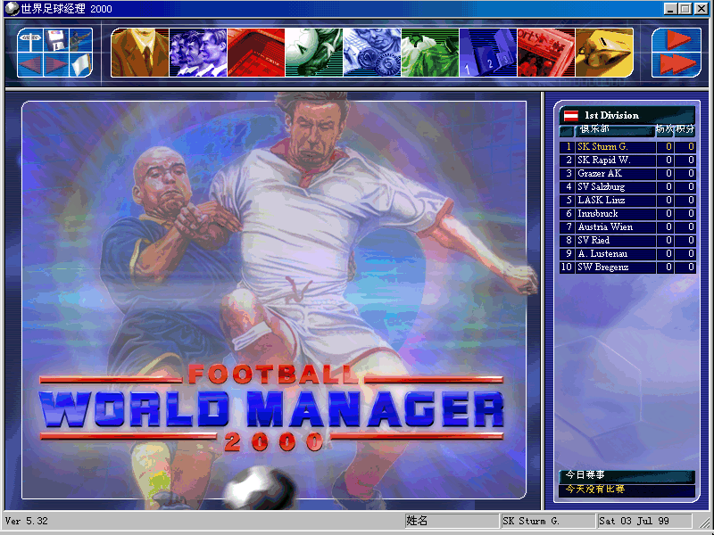

名稱：世界足球經理2000 (Football World Manager 2000，簡中／英文版) 簡介：Caffeine 2000年出品的足球團隊經營管理模擬遊戲，由Ubisoft代理發行 [待補]。   保護：光碟 備註：簡中版為5.27版 限制：由於相容性問題，遊戲只能在Win9x系統上執行。 檔案：nocd_eng_fix.rar = 英文5.31免光碟與XP修正檔（簡中版使用後變英文版）

